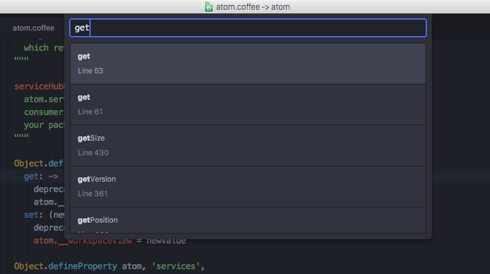

Chapter 1: Getting Started
Chapter 2: Using Atom
- Atom Packages
- Moving in Atom
- Atom Selections
- Editing and Deleting Text
- Find and Replace
- Snippets
- Autocomplete
- Folding
- Panes
- Pending Pane Items
- Grammar
- Version Control in Atom
- Writing in Atom
- Basic Customization
- Summary
Chapter 3: Hacking Atom
- Tools of the Trade
- The Init File
- Package: Word Count
- Package: Modifying Text
- Creating a Theme
- Iconography
- Debugging
- Writing specs
- Cross-Platform Compatibility
- Converting from TextMate
- Summary
Chapter 4: Behind Atom
- Configuration API
- Keymaps In-Depth
- Scoped Settings, Scopes and Scope Descriptors
- Serialization in Atom
- Developing Node Modules
- Interacting With Other Packages Via Services
- Maintaining Your Packages
- Summary
Appendix A: Resources
Appendix B: Upgrading to 1.0 APIs
2.2 Moving in Atom Improve this page
Moving in Atom
While it's pretty easy to move around Atom by clicking with the mouse or using the arrow keys, there are some keybindings that may help you keep your hands on the keyboard and navigate around a little faster.
Atom ships with many of the basic Emacs keybindings for navigating a document. To go up and down a single character, you can use Ctrl+P and Ctrl+N. To go left and right a single character, you can use Ctrl+B and Ctrl+F. These are the equivalent of using the arrow keys, though some people prefer not having to move their hands to where the arrow keys are located on their keyboard.
In addition to single character movement, there are a number of other movement keybindings:
Atom has support for all the standard Windows cursor movement key combinations. To go up, down, left or right a single character you can use the arrow keys.
In addition to single character movement, there are a number of other movement keybindings:
Atom has support for all the standard Linux cursor movement key combinations. To go up, down, left or right a single character you can use the arrow keys.
In addition to single character movement, there are a number of other movement keybindings:
- Alt+Left or Alt+BCtrl+Left - Move to the beginning of word
- Alt+Right or Alt+FCtrl+Right - Move to the end of word
- Cmd+Left or Ctrl+AHome - Move to the first character of the current line
- Cmd+Right or Ctrl+EEnd - Move to the end of the line
- Cmd+UpCtrl+PgUp - Move to the top of the file
- Cmd+DownCtrl+PgDn - Move to the bottom of the file
You can also move directly to a specific line (and column) number with Ctrl+G. This will bring up a dialog that asks which line you would like to jump to. You can also use the row:column syntax to jump to a character in that line as well.

Navigating by Symbols
You can also jump around a little more informatively with the Symbols View. To jump to a symbol such as a method definition, press Cmd+RCtrl+R. This opens a list of all symbols in the current file, which you can fuzzy filter similarly to Cmd+TCtrl+T. You can also search for symbols across your project but it requires a tags file.

You can generate a tags file by using the ctags utility. Once it is installed, you can use it to generate a tags file by running a command to generate it. See the ctags documentation for details.
Once you have your tags file generated, you can use it to search for symbols across your project by pressing Cmd+Shift+RCtrl+Shift+R. This also enables you to use Alt+Cmd+DownAlt+Ctrl+Down to go to and Alt+Cmd+UpAlt+Ctrl+Up to return from the declaration of the symbol under the cursor.
You can customize how tags are generated by creating your own .ctags file in your home directory, ~/.ctags%USERPROFILE%\.ctags. An example can be found here.
The symbols navigation functionality is implemented in the symbols-view package.
Bookmarks
Atom also has a great way to bookmark specific lines in your project so you can jump back to them quickly.
If you press Cmd+F2Alt+Ctrl+F2Ctrl+Shift+F2, Atom will toggle a "bookmark" on the current line. You can set these throughout your project and use them to quickly find and jump to important lines of your project. A small bookmark symbol is added to the line gutter, like on line 22 of the image below.
If you hit F2, Atom will jump to the next bookmark in the file you currently have focused. If you use Shift+F2 it will cycle backwards through them instead.
You can also see a list of all your project's current bookmarks and quickly filter them and jump to any of them by hitting Ctrl+F2.
The bookmarks functionality is implemented in the bookmarks package.